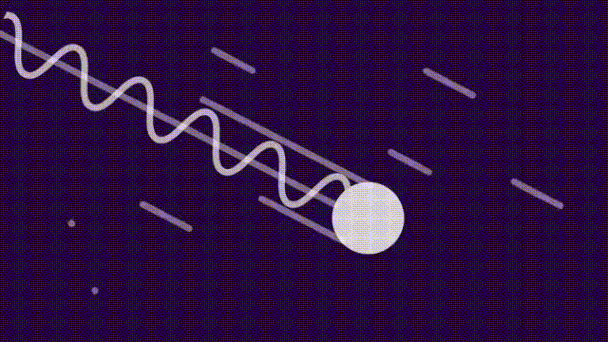

الوضع الفائق (Superposition)
الوضع الفائق (Superposition) هو مفهوم في الفيزياء الكمية يشير إلى حالة محتملة لنظام كمي يمكن أن يكون في عدة حالات بنفس الوقت . وفقًا لمبدأ الوضع الفائق، يمكن لجسيم كمي أن يكون في حالات عديدة تتداخل مع بعضها البعض قبل أن يتم قياسه أو مشاهدته.

معادلة الوضع الفائق
\(|Ψ>= α|0>+β|1>\)
بحيث يكون:
\(|α|^2+|β|^2=1\)
بحيث يمكن أن يعبر ال 0 و ال 1 عن خاصية فيزيائية مثل إتجاه الدوران (spin)
\(∣s〉=∣↑〉+∣↓〉\)
\(↑=1\)
\(↓=0\)
تجربة الشق المزدوج ( double slit experiment)
فمثلاً، في تجربة الشق مزدوج، يتم إرسال جسيمات الضوء من خلال فتحتين ضيقتين، ويتداخل الضوء بعد مروره من الفتحتين وينتج نمطًا تداخليًا على الشاشة الخلفية. في هذه الحالة، يمكن أن يكون لدى الضوء خصائص الجسيمات وخصائص الموجات في نفس الوقت، وهذا ما يعبر عن الوضع الفائق.
إنهيار الموجة
وما يميز الوضع الفائق هو أنه عندما يتم قياس النظام الكمي، يتم تحديد حالة واحدة محددة فقط من بين الحالات المتداخلة المحتملة. وهذا ما يعرف بانهيار الموجة المتداخلة، حيث ينتقل النظام الكمي إلى حالة محددة بناءً على نتيجة القياس، وتختفي المعلومات حول الحالات الأخرى التي كانت في حالة الوضع الفائق.